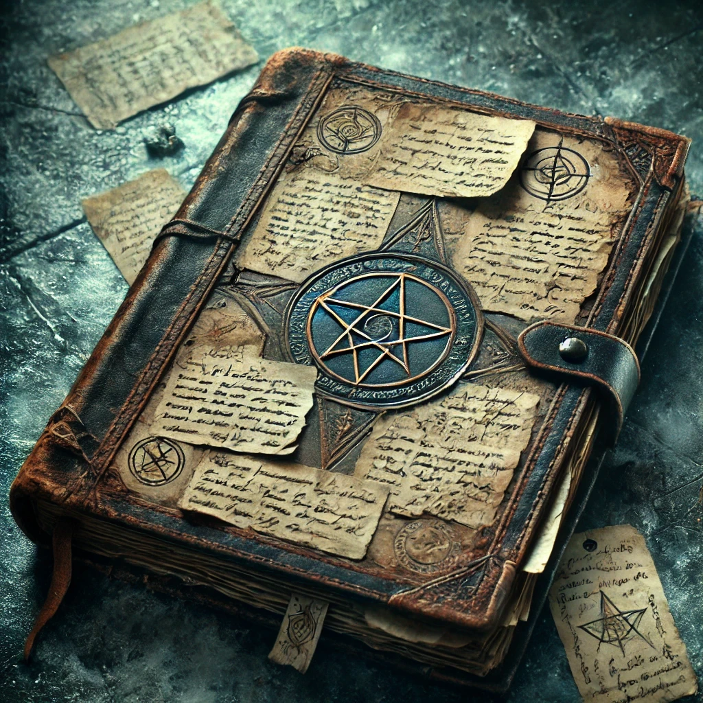

"The smoke from the pyre drifted across Easthaven’s snowy streets as the Red Wizard met his end. Foolish townsfolk had no idea what power they destroyed. I remained at a distance, content to watch. He had done his work—the Lost Spire was open, the legacy of Netheril beckoning. Yet his missteps proved useful, for his deception led Dannika’s Darlings to their doom within those ancient halls, clearing the way. I kept my distance, waiting and watching as Team Biscuit and… another… began to encircle the ruins."
"This was no ordinary adventuring party, this Team Biscuit. And the goblin who calls himself Kereptas? Delusional, perhaps. But dangerous all the same. I stayed on his trail."

Page 1 - The Fall of the Red Wizard
Page 12 - Tracking the Goblin and Team Biscuit
"I have kept close enough to study them—the goblin with his grand delusions and Team Biscuit with their relentless curiosity. I am patient. I follow as they scour ruins, brave caverns, and gather fragments of power scattered across the Dale."
"What impresses me most is the methodical way they hunt down and destroy my peers within the Arcane Brotherhood. Dangerous and capable adversaries, these Biscuit adventurers. Soon, at this rate, I may indeed be the most powerful member—left."
"Months passed, and I learned more of their secrets than they could know. The goblin believes himself to be Kereptas. Believes, as if that makes it true. Yet his goals align with mine—for now. Though I doubt the original Kereptas would have found himself in the form of a goblin, I find it intriguing to watch him wear the name so confidently."
Page 33 - The Lost Spire and the Allure of Pengu
"In our meeting, the Kereptas-imposter hinted at places of power, and while his mind is fixed on the weapons, mine turns to a different source. Pengu. A name whispered among the arcane, a creature of myth and potential hidden in the wastes. The imposter has little regard for it, but I have come to understand that a force like Pengu may hold the key to my own ambitions."
"He unwittingly pointed me back to the Lost Spire. His desires lie with the weapons, but mine are fixed on secrets beyond steel—secrets of the Netherese magics that may grant me the influence I need over Pengu’s power."
Page 47 - Raising the Dead
"I found them: the frozen remnants of Dannika’s Darlings scattered just beyond the Spire. Their bodies lay twisted and cold, perfect vessels. A gift of convenience. I reanimated them, turning them into my own guard. They will serve as they could not before—loyal, silent, and unerring. I used them to clear what remained within the Spire, traps and creatures alike, replacing them with my own craft."
"The goblin will betray me, this I know. When he does, Team Biscuit will be there, stumbling into my web. They seek the weapons, but they may yet find something more than they bargained for."
Page 56 - Forming Alliances in Shadows
"The Dale has no shortage of grudges against Team Biscuit. I reached beyond the Veil, whispering to those who have crossed paths with them and offering them promises only I can keep. I have secured… assistance. Not out of necessity, but rather as a strategic indulgence. Should Team Biscuit make it to the Spire, they will find enemies waiting in more forms than they expect."
Page 68 - The Deception of the KSpell
"I should have known better. The goblin was practically salivating at the thought of me using that so-called ‘gift’—one of his prized KSpells, coiled up in that cursed vial. He made it seem like an offer of power, a rare spell to help bind the forces I seek, but the moment I held it in my hands, I felt the wrongness of it, a subtle, sinister whisper threading through my thoughts."
"The spell is no gift. It is a parasite, a curse wrapped in the guise of a spell. If the tales are true, these KSpells are shards of the original Kereptas, twisted fragments designed to infect and control. I finally understand… that’s what has ensnared the goblin. He is no true wizard but a pawn to these foul entities, a marionette to Kereptas’ lingering will. No wonder he was so eager for me to use it; he sought to bind me, to make me yet another puppet."
"The thought is repulsive, and I would sooner abandon my ambitions than let myself be chained by the ghost of some long-dead mage. I hurled the vial into the deepest crevasse I could find and watched it disappear into the darkness below. If the goblin thinks he can control me, he will soon learn I am no ordinary necromancer, no thrall to a spectral king."
"Let him chase his shadows. I have my own path, and I will not be caught in his web."
Page 72 - The Golden Disk
"My patience wanes. The goblin is with the giants, his foolish plan underway. Team Biscuit draws closer, their path as predictable as the fall of snow."
"The golden disk’s secrets have eluded me, its symbols ancient and haunting. I study it here in the depths of the Spire, preparing the last of my defenses. And so, I have confirmed my suspicions—the goblin lied to me about the weapons. They are not here in the Spire, as he claimed. I suspected he was attempting to play upon my ambition, to manipulate me into following his scheme."
"Curious, though, that Team Biscuit chases the same shadow, the same empty promise. I do not yet understand their reasoning, but it seems this red herring serves more than one purpose."
"Let them come. I shall wait, and they will learn that even in death, knowledge is a weapon far more lethal than any blade."